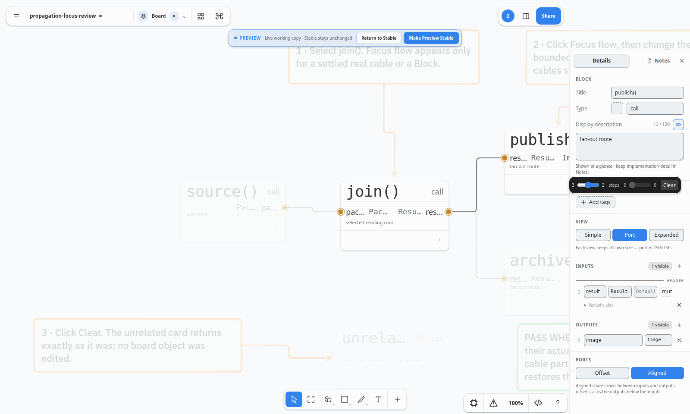

The upstream range is a native
dir=rtl control, not a CSS mirror. In the real browser, ArrowLeft raises its selected upstream reach toward the outer left cap.Implementation gallery · 2026-09-04
The local Focus reading lens puts the upstream horizon on the left and the downstream horizon on the right: maximum · slider · selected · steps · selected · slider · maximum · Clear.
dir=rtl control, not a CSS mirror. In the real browser, ArrowLeft raises its selected upstream reach toward the outer left cap.1..maximum range. The maximum is at the outer edge; the live selected count sits immediately beside steps. A disabled dead end visibly and accessibly reads 0.The smoke journey extends a real branch to three upstream steps, focuses the native RTL range, presses ArrowLeft to select step two, and captures this rendered state. It also proves the DOM order, visible minimum/maximum values, normal downstream ArrowRight behavior, byte-stable Clear, and zero browser-console errors.

Run: npm run test:propagation-focus · screenshot: docs/assets/propagation-focus-outward-sliders-live-2026-09-04.png